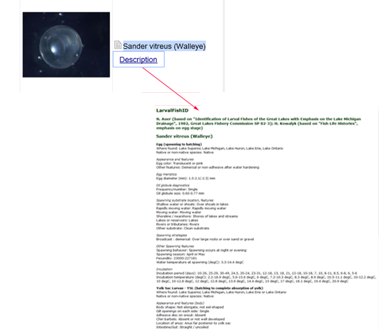

CAUTIONS:
|
Getting Started: Before You Key
Before using this key, first examine the specimen and record as many of the following characteristics as possible (see Glossary for definition of terms). Measurements should be made in millimeters to the nearest 0.1mm.
Note that while you can choose features in any order, the keys are set up so that the most useful features are displayed at the top of the key. Each life stage also includes a section entitled "Additional Features to Aid in Identification". Use this section to find features that might not be available for most species.
You will more readily eliminate (or identify) specimens if you focus on determining the features below.
EGG:
- diameter of the egg in millimeters (mm)
- general shape of the egg (round or oval)
- presence of oil globule(s)
- presence of spines, filaments, or an attachment disc on the surface of the egg
- if the embryo inside the egg is developed, try identifying based on larval characteristics
LARVAE:
- is there a yolk sac present (if so, use the yolk-sac larvae portion of the key)
- body shape (eel-shaped, elongate, not elongate, laterally compressed)
- number of myomeres (if you are unable to get counts, determine if the preanal count is more, less, or equal to the postanal)
- gut shape (straight, compact, looped, trailing)
- vent position
- number of gill openings (1 or multiple)
- total length of the specimen in mm
- head characteristics (head spines, chin barbels, adhesive disc, snout length - long or short as compared to total length)
- pigmentation characteristics
Getting Started: Main Display
The key will be displayed as a grid, divided into panes or quadrants. The top left (L1) quadrant will be used to select features separated by Egg, Yolk Sac Larvae, and Larvae. The top right (R1) lists the fish families and species. The bottom two quadrants are used to show features you have selected and any families discarded during the selection process. You can select the + (plus) sign to the left of either features or family to expand the list, selecting a - (minus) sign will close the list.
Getting Started: Tutorial (a simple search)
(See also: Menu Options for more detail on what you can do with the Lucid product)
1. Select the + (plus) sign next to the Feature Category that fits the specimen you have (Egg, Yolk Sac, or Larvae). For this example, I have selected "Larvae". Notice the list of other options expanded below it (body shape, body width, etc).
2. Choose a feature that fits the criteria you have either measured or observed.
For the example, I have measured a Total Length (TL) of 25mm. For numeric features, you will click in the white box. A pop-up box will appear and you then input the number/value (e.g. 25 or 25.0). You may also enter a range, separated by a hyphen (e.g., 25-30).
Click "OK".
(NOTE: If you do not get a pop-up, be sure that you do not have pop-ups disabled in your browser settings.)
You will now notice things changing in the other three panels.
a) The top right panel now has a narrower list of Families and Species (from 1265 to 281)
b) The bottom left panel above (Features Chosen) shows you what features you've already selected (searched for); and the bottom right shows you which families/species you've eliminated (discarded) by your search.
HINT: Curious why a species was eliminated? Select that family or species in the bottom "Entities Discarded" quadrant and click the "Why Discarded" button in the top menu.
3. Continue adding features until you've identified your specimen. For this example, I have clicked in the box for 'Intestine - Gut = 'trailing'. You will see a check mark for that selection. This now takes my number of entities down to 12 species.
You can clear your entire search by hitting the restart key . Just remember this clears all the data back to the beginning. To clear just one item, unselect that check box.
4. Notice Color Coding?
You may see colors when you are narrowing down your entities (species or families). this is due to the ability of the key to take the feature(s) you've chosen and 'grade' them as to whether the key thinks they have a higher liklihood of being the species you are looking for. Therefore 'green' indicates a high probability, whereas orange means that some of the features you chose may be rare or misinterpreted but still are possible hits. If the entity remains black, then it still fits but it isn't considered as high a liklihood.
More : Menu Options
At the top of the key are menu options to assist you in navigating through the key.

1) Restart Key - resets the key, removing all features you have selected
2) Collapse Tree - minimizes the list of features or fish species back to just family level
3) Expand Tree - expands the list of features or families
4) Subsets - limit your selection to groups of features or entities pre-defined by the author of the key
5) Find Best - will determine which is the best feature to address next, and jump to and open that feature in Features Available.
6) Next Best and Previous Best buttons on the toolbar allow navigation through the features list, if the first feature nominated cannot be addressed.
7) Prune Redundants - will scan the features in Features Available and remove any redundant features and/or states for the remaining entities. This may be useful to “clean up” the list of features, to make it less likely that a choice will be useless.
8) Differences - view a list of features that differ between the entities
9) Why Discarded - After choosing several states, entities which do not match the current selection are moved to the Entities Discarded window. To determine why an entity was discarded, select it from the Entities Discarded window then select Why Discarded from the Entities menu
More : Images
If you expand the list of Family names (either by single clicking on a + (plus) or by clicking in the top right panel and then choosing "Expand Tree" from the top menu bar, you will see images, where available, for the species'.
Clicking on a single small thumbnail image will bring up the Photo Gallery for that Species.
In this example, I clicked on the thumbnail image for Lake Whitefish. Clicking on the one of the smaller images in the gallery pops up a larger view of the image. Hovering over the larger image will bring up navigational arrows which will allow you to sequence through the photos in the gallery.
Below the image will be any affiliation, copyright or other notations for that larger image. While we do provide some photographic materials (and welcome submission of images to increase our collection), most of what we provide are drawings as these often contain the best depiction of particular features key to identifying species.
Click on the 'x' in the upper right to close the Photo Gallery Viewer.
More: Fact Sheet-Descriptive Details
When available, a small text icon will take you to more information.
1) If you see the icon next to a feature, this link will take you to a page in our Glossary to give you a definition of that feature.
2) If you see the icon next to a family or species, this link will take you to a descriptive page which lists the available data we used to identify that entity.
